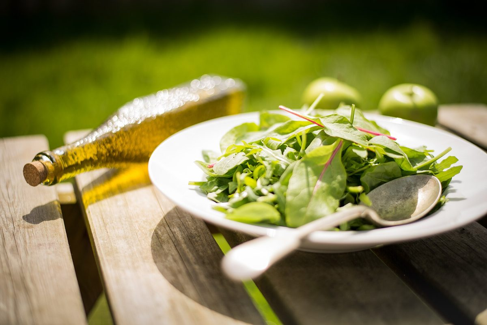
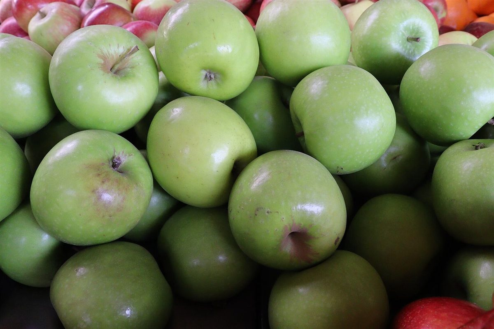
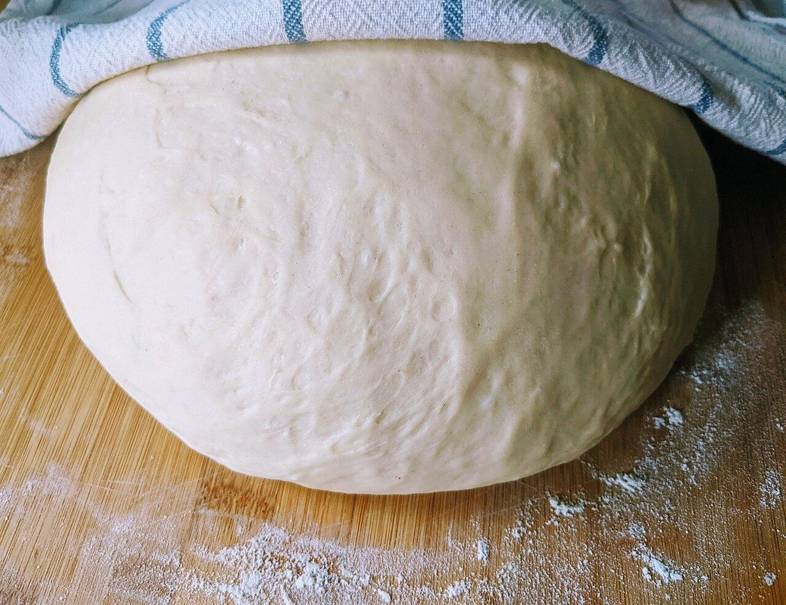

1999
店のこと
店のこと
確認できているのは、所在地・電話番号・Instagramのアカウントです。
制作側の連想です。お店の理念・由来とは無関係で、店名の由来も分かりません。「1999」という数字から、走行距離計(オドメーター)の「あと1で2000に繰り上がる」瞬間を連想し、このサイトの飾りにしています。
確認できていること
- 店名は「Cafe Rucola 1999」、業種はカフェ
- 所在地は岡山県玉野市八浜町大崎１６４８−２(〒706-0224)
- 電話番号は0863-30-9722
- 営業時間・定休日・メニュー・価格・ご予約・駐車場は準備中

数字の遊び(制作側の想像)
千の位は「1」、百・十・一の位は「9」。三つの9がそろうと、次のひと目盛りで桁が繰り上がります。下の二枚は、その「ひと目盛り前」「ひと目盛り後」を勝手に想像して並べたものです。お店の実際の様子や提供内容とは関係がありません。
ひと目盛り前(1999)

ひと目盛り後(2000)

店名について
「Rucola」「1999」の意味は、こちらでは分かっていません。由来や込められた思いはお店の方にうかがってから、このページに反映します。